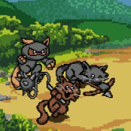
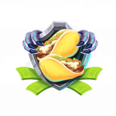
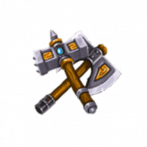
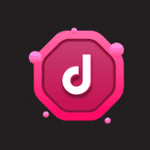
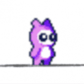
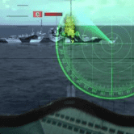
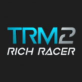
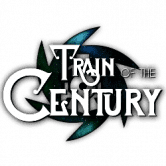
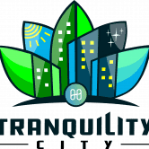

 World War Goo 加密闲置游戏 EtherGoo 的全新竞技续集。加入加密部落，招募单位并为战利品而战！World War Goo，原版EtherGoo的始祖，是一款奇幻放置类游戏，玩
 World War Tez World War Tez 是 Tezos 区块链上的交互式 RPG 风格 dApp，使用 $XTZ 和 $GUTS 作为实用程序。流动性提供者还可以获得游戏内奖金，以及平台上每笔交易和销售的削减。角斗士，
Token Fighter 什么是令牌战斗机？ Token Fighter 是一款多人 NFT（Non-Fungible Token）收藏游戏，它结合了 DeFi 质押机制，以使代币持有者进一步参与维持 Token Fighter 代
TokenLands TokenLands 是一个结合 WAX 区块链和网络游戏的新世界殖民经济 P2E 模拟器。基于游戏的游戏使用独特的 NFT 卡集合，包括基础设施、土地、头像、头像升级、资源和以战争为
 TokenWarriors 什么是代币勇士？ TokenWarriors 允许玩家购买、收集、繁殖、出售和对抗你的战士。 培育和销售各种类型的虚拟TokenWarriors或让他们战斗以获得更多经验
 Toktikk To Earn Toktikk 要赚取什么？ Toktikk To Earn 旨在成为一个多功能的视频录制应用程序，主要使用短视频 - 多利润产品结合 Web 3.0 技术，帮助用户通过使用 TokTikk To Earn App 赚取 $T2E 来赚钱。 该项
 TonLoot Gotchi 什么是 TonLoot Gotchi？ TonLoot Gotchi 是在 TonLoot 虚拟宇宙中发现的第一个生物。只有 10 英寸高，它们的身材可能看起来不起眼，但不要让它们的大小欺骗你！这些品脱大小
Torpedo LAUNCH TORPEDO LAUNCH 是以太坊区块链上第一款基于技能的潜艇街机游戏，由 HDX20 代币提供支持。 来和其他玩家对战，向世界展示你应该成为赢家并收集以太坊奖品。 你是二战级潜
 Torpedo Launch (Tron Edition) 在 Tron（TRX）区块链上推出由 HDX20 代币提供支持的第一款基于技能的潜艇街机游戏“TORPEDO LAUNCH”。 关于“鱼雷发射”：您在二战级潜
 Trade Race Manager 2: Rich Racer Trade Race Manager 2 (TRM 2) 代表了完全以 3D 构建的下一代交易模拟器，具有赛车世界中的游戏和赚钱模型。用你独特的 NFT 超级跑车与世界各地的现场玩家竞争。与朋友组队并
 Train of the Century 什么是世纪列车？ 世纪列车是一款全新的收藏 NFT 集换式卡牌游戏。 世纪火车中有不同类型的卡片，您可以使用它们来建造自己的火车。 您将能够组合机车、轨道
 Tranquility City 什么是静城？ Tranquility City 是一款在 Harmony 区块链上开发的游戏，人们可以在其中相互交流、玩得开心，并且显然可以进行交易。 城市中将有多个区域，每个区域都有房地产
TreasureBlox 什么是TreasureBlox？ TreasureBlox 是世界上第一个加密和现实世界的寻宝游戏。玩家使用 BLOX 进入寻宝游戏，您可以在其中找到线索并解决谜语以赢得宝藏。
Vulcan's Battle Chess Vulcan’s Battle chess 是一款使用 VulcanVerse 中的 Vulcanites 的在线多人国际象棋游戏。玩速度国际象棋以获得参加当日 $LAVA 奖池的资格。管理 PYR、LAVA、MATIC 和 ETH 等多种加密货币
VulcanVerse VulcanVerse 是一款开放世界的大型多人在线角色扮演游戏 (MMORPG)，由格斗奇幻作家编写绝杀。在 VulcanVerse 中，玩家可以真正拥有不可替代代币 (NFT) 形式的资产。在 VulcanVerse 中
Walk Dogs Walk Dogs 是一款内置 Game-Fi 元素的 Move-To-Earn Web3 应用程序，它结合了我们生活中很重要的两项活动：步行和赚钱。 Walk Dogs 协议允许用户在使用真实和虚拟 NFT 宠物的每一步中赚取 $WLD 代
Walken Walken 平台体现了将数千名新用户加入 DeFi 的机会。 Walken 是一个游戏和练习，由一个拥有超过 5000 万应用商店下载量和 1000 万美元年收入的团队构建的移动应用程序。 用户通
Wizards & Dragons Game 数以千计的巫师和龙在虚拟世界的一座塔中竞争。 GP 的诱人宝藏等待着您，赌注极高。所有元数据和图像都是 100% 在链上生成和存储的。没有 IPFS。没有 AP
Wolf Game for Solana 第 1 到 10000 个 NFT 的铸币费为 1 SOL。 第 10001 到 20000 个 NFT 的铸币费为 20000 Fleece 代币。 第 20001 到第 30000 个 NFT 的铸币费为 30000 Fleece 代币。 第 90001 到第 100000 个 NFT 的铸币费为 100000 Fleece 代币，永久铸币
Wombat Dungeon Master 多链 NFT 质押 在 EOS 和 WAX 上通过 Uplift、Womplay、.gems、Crypto Writer 等知名 NFT 收藏获得奖励！ 漫长的季节 没有冲刺或比赛的奖励。以自己
Wonder Game Wonder Game 是第一款在 Harmony 和 ICE 区块链上推出的协作 DeFi 游戏。游戏是一个有趣而混乱的地方，三个主要角色 NFT - Alice、Queen 和 Card 试图收集最珍贵的资产 - $
Word Search Blitz 你喜欢拼字游戏吗？试试我们全新的拼写难题。Word Search Blitz 拥有一个 30,000 多个单词的大型数据库，每个谜题随机选择每个游戏的玩家单词列表。创造数百万种不
Yooshiba Inu Yooshiba Inu ($YSHIBAINU) 是币安智能链下的 BEP-20 代币。 一种超通缩代币，每笔交易（购买、出售和转让）征收 10% 的税，其中 5% 的税进入流动资金池。 合约的回购销毁功能保证了代币
King of Planets King of Planets 是一款基于区块链的 P2E（Play-to-Earn）游戏，包含 NFT、DeFi 2.0 和 GameFi。它是在 Klaytn 网络上创建的，用户可以赚取和花
King Rooster King Rooster 是第一个基于区块链的“PLAY TO WIN”（P2E）斗鸡 NFT 游戏，玩家可以在其中饲养、照顾、喂养、训练和繁殖他们的公鸡。该游戏旨在让我们的玩
Kingdom Arena 王国竞技场是一个 向导 世界模拟和 冒险 战斗 Play-to-Earn 游戏。结合城镇建设、英雄冒险、宠物养殖、贸易和海战、矿山开采、宴会等等。Kingdom Arena是游
Kingdoms Beyond Kingdoms Beyond 是一款免费的开放世界 MMORPG，可以直接从您的浏览器中播放。收集英雄，继续任务，结交新朋友。从英雄到物品，您收集和赚取的稀有资产都有区
Kingdoms of Friendly Vale 用你的机器人军队接管一个王国并建立它，直到你成为友好谷中最强大的统治者。Deck of Varmints 的存在是为了为他人提供积极的体验，而不是从他们身上榨取尽
KingSpeed Kingspeed 是一款基于区块链的免费游戏和赚取收入的赛车游戏，玩家使用 NFT 赛车和设备在他们创造的巨大且不断扩大的赛车世界中挑战其他玩家。在 Kingspeed 中，用户可以收
Kitty Inu 镇上有一只新的狗狗。 Kitty 是一种游戏和 NFT DeFi 协议，为 Play-to-Earn 和 Metaverse 生态系统提供动力。Kitty 的使命是建立最好的社区驱动的游戏和 NFT Defi 协议，并由 Defi 中最好的团


 开发的 Axie Infinity 2.0 元界世界，是最具可玩性和盈利性的 GameFi 产品。")

 是一种 meme 硬币，专为 Yooshiba 的游戏而创建，以赚取 NFT 游戏。")